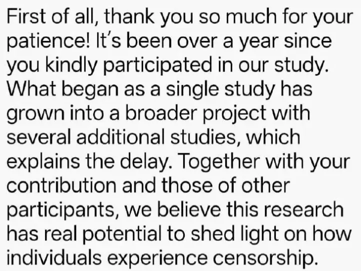

Bewijsstuk · E-mail
Andrew Hales aan Giltay, 1 juli 2025
De passage
“Allereerst heel veel dank voor uw geduld! Het is meer dan een jaar geleden dat u zo vriendelijk was aan ons onderzoek deel te nemen. Wat als één onderzoek begon, is uitgegroeid tot een breder project met verscheidene aanvullende onderzoeken, wat de vertraging verklaart. Met uw bijdrage en die van andere deelnemers kan dit onderzoek volgens ons werkelijk licht werpen op hoe individuen censuur ervaren.” Pagina 1, de tekst van het bericht. Vertaald uit het Engels; de oorspronkelijke tekst staat hieronder.
Oorspronkelijke tekst
“First of all, thank you so much for your patience! It’s been over a year since you kindly participated in our study. What began as a single study has grown into a broader project with several additional studies, which explains the delay. Together with your contribution and those of other participants, we believe this research has real potential to shed light on how individuals experience censorship.” De e-mail is in het Engels geschreven.

Waarom dit document telt
In deze e-mail van 1 juli 2025 dankt Andrew Hales, associate professor psychologie aan de University of Mississippi, Giltay voor zijn deelname, legt hij uit dat wat als één onderzoek begon, is uitgegroeid tot een breder project met verscheidene aanvullende onderzoeken, en schrijft hij dat het onderzoek licht kan werpen op hoe individuen censuur ervaren. Twee dagen later antwoordde Giltay dat zijn citaat over het afschrikkende effect van censuur in het conceptartikel juist was weergegeven. Het essay stelt dat Giltays zaak is opgenomen in een lopend onderzoek naar de gevolgen van boekcensuur.
Herkomst
- Document
- Twee schermafbeeldingen uit Gmail: het bericht van Andrew Hales, en Giltays antwoord van twee dagen later, waarin twee passages zijn zwartgelakt
- Van
- Andrew Hales, associate professor psychologie, University of Mississippi (book.censorship@olemiss.edu)
- Aan
- Edwin Giltay
- Datum
- 1 juli 2025, 16:25 uur
- Onderwerp
- “Participant validation of draft paper”, Engels voor ‘Controle van het conceptartikel door de deelnemers’; de titel van de wisseling zoals die boven Giltays antwoord staat
- Antwoord
- Edwin Giltay, donderdag 3 juli 2025, 13:59 uur, met de aanhef ‘Dear Andrew, Julia, and Natasha’
- Taal
- Engels
- Berust bij
- Archief van de auteur
Aangehaald in: het essay ‘Het verbod viel, het boek bleef overeind’ in het hoofdstuk (9) ‘Voorgoed vastgelegd’.
Bewijsstukpagina: https://
Document: https://
Laatst gewijzigd 13 september 2026, geraadpleegd 3 oktober 2026.

Deze pagina is een bewijsstuk bij het boek De doofpotgeneraal van Edwin Giltay en de bijbehorende website.